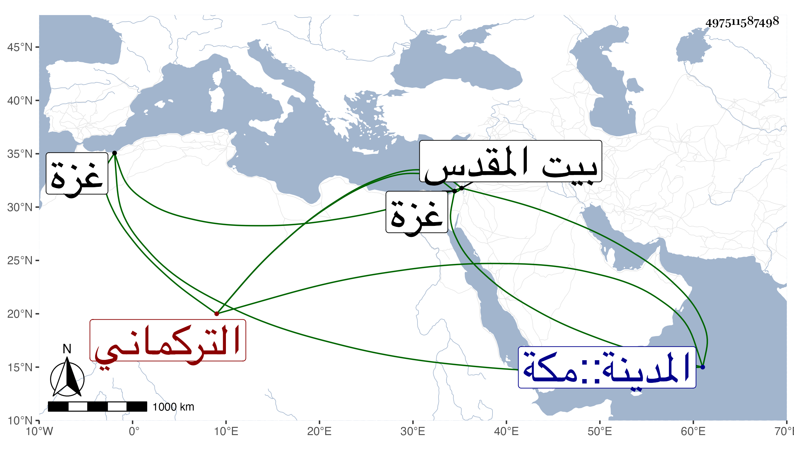

0902Sakhawi.DawLamic.ITO20230111-ara1.EIS1600.497511587498
Biography ID: 497511587498
819
دقماق التركماني . باشر الدوادارية لشاذ بك حين كان نائب غزة فشكر واستقر في نظر الحرمين ونيابة القدس بعد صرف العبد الصالح محمد بن النشاشيبي فظلم وعسف ، وجيء به في سنة خمس وتسعين فخدم ورجع في خدمة الدوادار إلى أن صرفه في ربيع الثاني من السنة التي بعدها بخضر بك الاشرفي ، وكان من أذاه أن رافع في الكمال بن أبي شريف .
